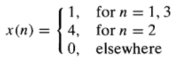

DIGISIG Reviewer
For fill in the blanks, answer in lower case only.
Score:
1. Anything that carries some sort of information is known as a ______.
2. Any physical quantity that is unable to convey any useful information is referred to as _____, a random phenomenon arising due to some sort of a disturbance in the system and in most cases is undesirable.
3. A ______ is defined as any physical quantity represented as a function of one or more independent variables (such as time and space), which conveys some useful information about that particular quantity. This means it is any physical quantity that varies with time, space, or any other independent variable or variables.
4. Choose the best answer. A signal that varies linearly with the independent variable t (time).
A. s1(t) = 5t
B. s2(t) = 20t^2
5. Choose the best answer. A signal that varies quadratically with t.
A. s1(t) = 5t
B. s2(t) = 20t^2
6. A signal is a _________________ as it depends on only one independent variable, i.e. time.
7. When a signal depends on 2 independent variables, for example, x and y it is referred to as a _________________
8. When a signal depends on 3 independent variables x, y, and z, it is a _________________
9. In terms of signal generation:
___________ are generated by forcing air through the vocal cords.
10. In terms of signal generation:
___________ are generated by exposing a photographic film to a scene or an object.
11. Signal generation is usually associated with a ______ that responds to a stimulus or force.
12. A _____________ pertains to the stimulus in combination with the system.
13. A _____ may also be defined as a physical device that performs an operation on a signal.
14. A _____ is a system used to reduce the noise and interference corrupting a desired/wanted information bearing signal. It performs some operation(s) on the signal, causing the reduction/filtering the noise and interference from the desired/wanted information-bearing signal.
15. In filters, ___________ involves filtering the noise and interference from the desired signal.
16. Operations performed by systems on signals are usually referred to as ___________.
17. In digital processing of signals on a digital computer, the operations performed on a signal have a number of mathematical operations as specified by a ___________.
18. Such program represents an implementation of the system in _______, which means a system is realized on a digital computer by means of a sequence of mathematical operations, i.e., the system is a _____________ realized in software.
A. software ; digital signal processing system
B. signal processing ; program
19. An _______ is the method or set of rules for implementing the system by a program that performs the corresponding mathematical operations.
20. A signal x(t) is a _____________ if t is a continuous variable.
A. continuous-time signal
B. discrete-time signal
21. When t is a discrete variable such that x(t) is defined at discrete times, x(t) is a ___________. They are are defined only at certain specific values of time.
22. A ______ may therefore be often identified as a sequence of numbers denoted by {xn} or x[n] where n is any integer (n - sequence number)
23. A ____________ is a signal that takes on all possible values on a finite or an infinite range.
A. continuous-valued signal
B. discrete-valued signal
24. A ____________ takes on values (usually equidistant such that they can be expressed as an integer multiple of the distance between two successive values) from a finite set of possible values.
A. continuous-valued signal
B. discrete-valued signal
25. A _______ is a discrete-time signal having a set of discrete values.
26. ____________ is the process of converting a continuous-valued signal into a discrete-valued signal.
27. Quantization is basically an approximation process which is accomplished either by _____ or by _____.
A. rounding ; truncation
B. analog ; digital
28. A _______ is one that repeats the sequence of values exactly after a fixed length of time, known as the _____.
A. periodic signal ; period
B. continuous-time signal ; period
29. Any continuous-time signal which is not periodic is called a ________.
30. A signal is a _____ signal if its value is a real number, and is a _____ signal if its value is a complex number.
A. complex ; real
B. real ; complex
31. The ________ is the mathematical description of a signal.
32. A ___________ is any signal that can be uniquely described by an explicit mathematical expression, a table of data, or a well defined rule, emphasizing that all past, present, and future values of the signal are known precisely, without any uncertainty.
A. deterministic signal
B. random signal
33. A ___________ is a signal that either cannot be described to any reasonable degree of accuracy by explicit mathematical formulas or such a description is too complicated to be of any practical use.
A. deterministic signal
B. random signal
34. Aside from Graphical representation, there are three alternative representations namely: Functional representation, Tabular representation and Sequence representation
A. True
B. False
35. Seven-point sequence is a signal consisting of seven samples
A. True
B. False
36. x(n) is said to be the nth sample of the signal
A. True
B. False
37. x(n) is undefined (not equal to zero) if
x
is not an integer.
A. True
B. False
38. What kind of representation is this:

A. Sequence representation
B. Graphical Representation
C. Tabular representation
D. Functional representation
39. What kind of Elementary Discrete-time signal is this:
A. Unit Step Signal
B. Unit Sample Sequence
C. Exponential Signal
D. Unit Ramp Signal
40. What kind of Elementary Discrete-time signal is this:
A. Unit Step Signal
B. Unit Sample Sequence
C. Exponential Signal
D. Unit Ramp Signal
41. When
a
is real, x(n) is a real signal.
A. True
B. False
42. Among the Choices which is/are the simple manipulations of discrete-time signals:
A. Unit Delay
B. Shifting
C. Folding
D. Time Scaling
E. Addition, multiplication, and scaling of sequences
F. Unit Advance
43. Choose the correct definition of the corresponding Block diagram representation of discrete time systems
Adder:
Addition of two signal sequences
Amplitute scaling
Moves the signal
Delays the signal
Multiplication of two signal sequences
Constant Multiplier:
Addition of two signal sequences
Amplitute scaling
Moves the signal
Delays the signal
Multiplication of two signal sequences
Signal Multiplier:
Addition of two signal sequences
Amplitute scaling
Moves the signal
Delays the signal
Multiplication of two signal sequences
Unit Delay Element:
Addition of two signal sequences
Amplitute scaling
Moves the signal
Delays the signal
Multiplication of two signal sequences
Unit Advance Element:
Addition of two signal sequences
Amplitute scaling
Moves the signal
Delays the signal
Multiplication of two signal sequences
44. There are 3 types of Interconnection of DT Systems namely: Series, Parallel and Series-Parallel
A. True
B. False
Submit